Kreuzung & Spire
Neon Plaza
Das Herz der Karte: eine Kreuzung mit Neon-Spire, umgeben von einem Strassenring mit Verkehr.
Ein Projekt von Aurelio Zingarello
Neon-Stadt. Dein Team. Deine Runde.
Ein kostenloser 3D-Shooter, der direkt im Browser läuft. Scroll dich durch eine ganze Runde.
Zone 01 · Die Karte
Die Standardkarte: rund 250 × 250 Meter Neon-Stadt, gebaut aus Modellen von Künstlerinnen und Künstlern auf Sketchfab. Und mittendrin fährt ständig ein Zug.
Kreuzung & Spire
Das Herz der Karte: eine Kreuzung mit Neon-Spire, umgeben von einem Strassenring mit Verkehr.
Der Zug
Lok, drei Flachwagen, Lok: rund 73 Meter Zug. Er fährt für alle Spieler zur selben Zeit an derselben Stelle, und auf der Ladefläche fährst du einfach mit.
Kai & Container
Kai, Container und das Meer im Osten. Der Hafen ist einer von drei Bahnhöfen auf der Strecke.
Kran & Lift
Ein Rohbau mit Kran und Lift: hier geht es hoch hinaus.
Hügel & Windräder
Ein Hügel im Norden mit fünf Windrädern, die sich nie aufhören zu drehen.
Wald & Bahnhof
Im Westen liegt der dritte Bahnhof der Strecke, mitten im Wald.
Zone 02 · Fahrzeuge
Auf den Parkplätzen von Depot und Southside stehen zehn fahrbare Autos. Mit E steigst du ein, deine Teammates fahren mit und schiessen durch die Scheiben.
Dazu fahren sechs Autos im Stadtverkehr. Wer ihnen im Weg steht, bekommt Schaden.
Zone 03 · Arsenal
Vom Schnellfeuer bis zum Raketenwerfer. Dazu Enterhaken, Jetpack, Teleporter, Drohne und Scanner: du kommst dahin, wo andere nicht hinkommen.

Viper, Hand Cannon
WaffeAR-7 Striker, Hornet SMG
WaffeBreaker
WaffeMarksman DMR, Longshot
WaffeStormcaller (Raketen), Pulse Rifle, Lancer Laser
WaffePlasma-Klinge
Waffe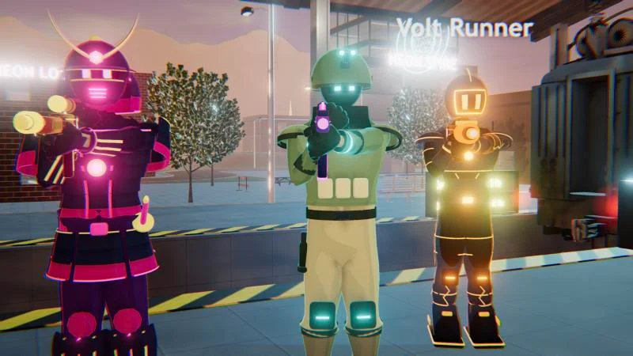
Haken auf einen Zielpunkt schiessen und hinziehen.
Gadget · FLeertaste in der Luft halten. Der Treibstoff lädt am Boden wieder auf.
Gadget · SpaceAnker setzen, später erneut drücken und zurückteleportieren.
Gadget · FBeschwört für 20 Sekunden eine Drohne, die Gegner beschiesst.
Gadget · FMacht Gegner im Umkreis für 5 Sekunden sichtbar.
Gadget · F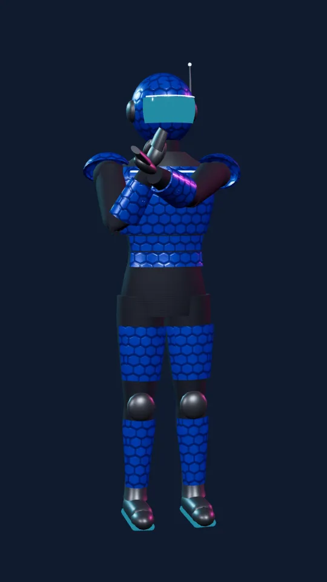
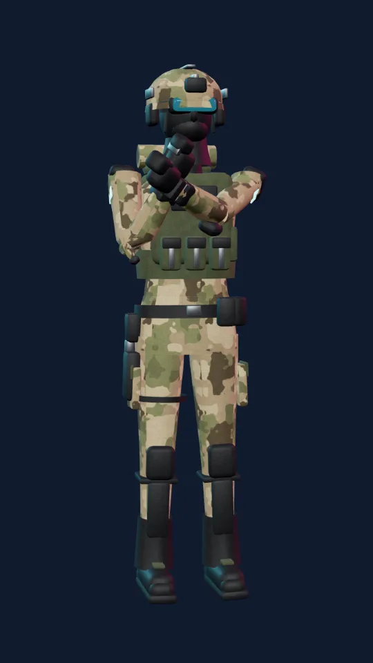
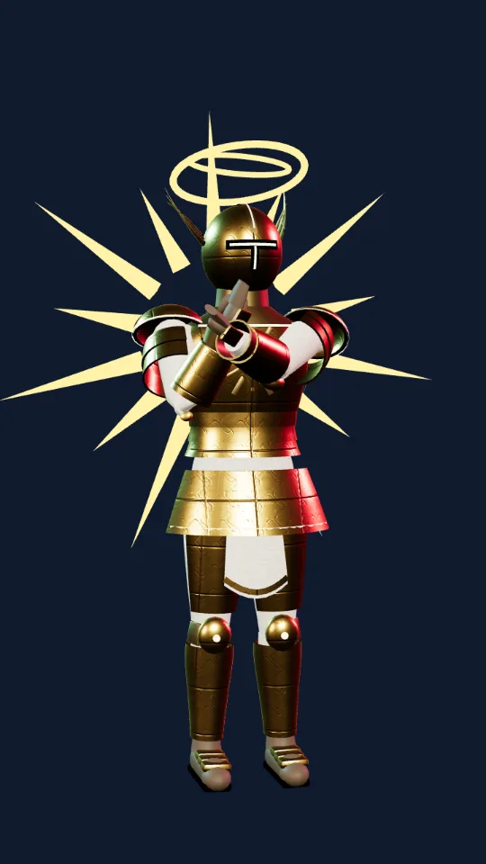
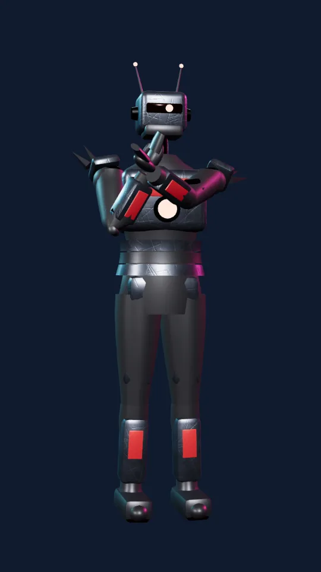
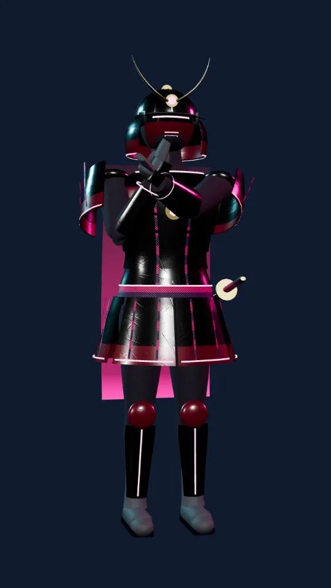
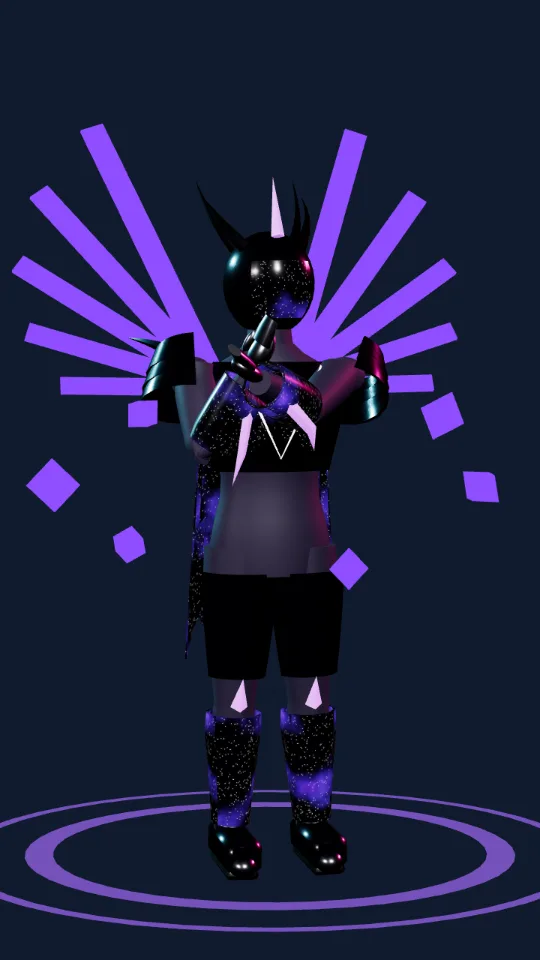
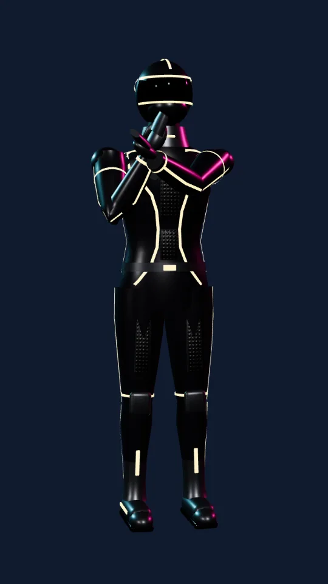
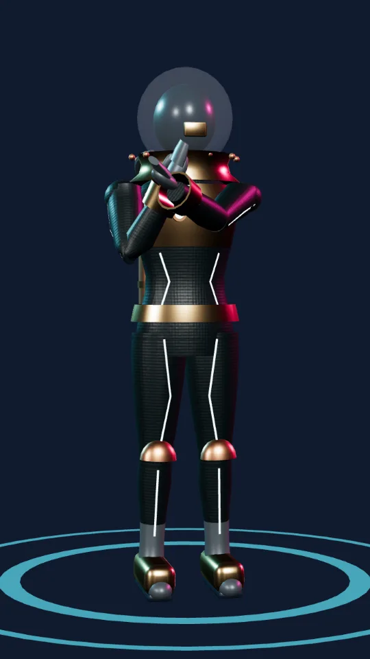
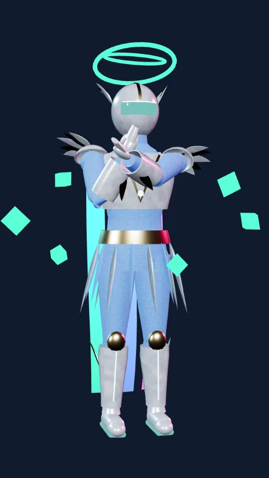
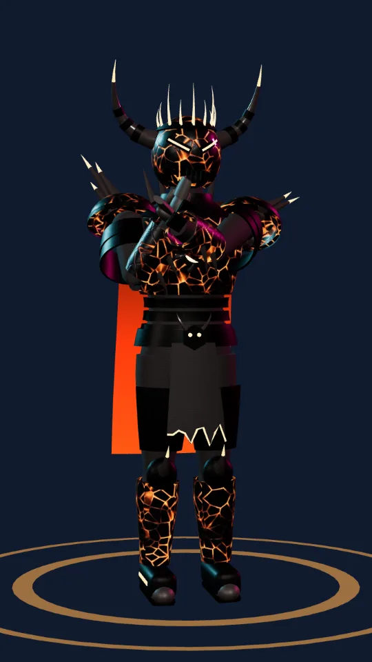
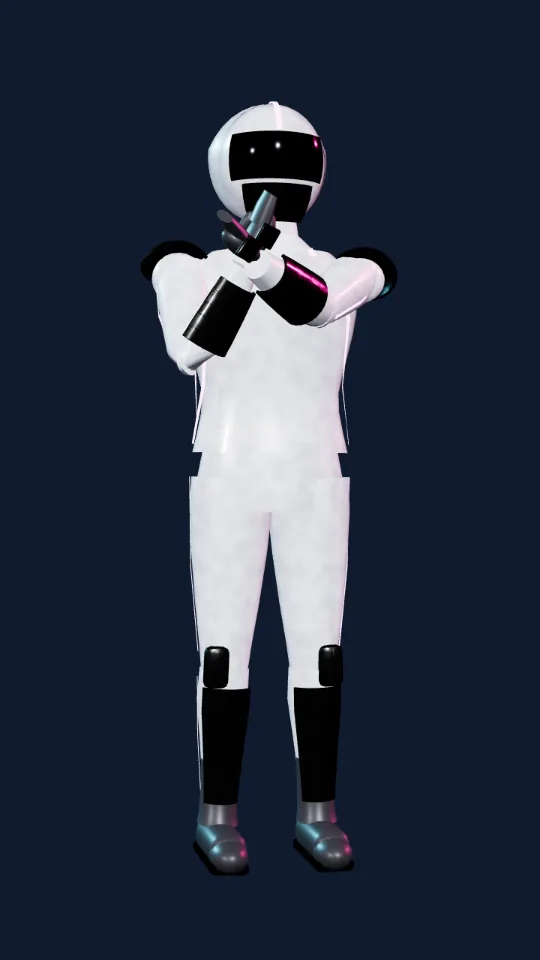

Zone 04 · Looks
17 Skins in fünf Seltenheitsstufen, alle auf einem gemeinsamen NEON-Toon-Grundkörper.
Ab Level 1
Ab Level 1
Ab Level 8
Ab Level 13
Ab Level 16
Ab Level 20
Ab Level 20
Ab Level 26
Ab Level 25
Ab Level 30
Ab Level 38
Nur mit Plus
Zone 05 · Making-of
Jeder Look beginnt als Konzept, wird in Blender modelliert, auf ein gemeinsames Skelett gesetzt und im Browser mit Toon-Schattierung zum Leuchten gebracht.
Silhouette, Helm, Farben: das Konzeptblatt für den Vanguard.
Modelliert, auf ein 22-Knochen-Skelett gerigged und animiert.
Three.js-Toon-Shader: drei Schattierungsstufen plus Randlicht.
Zone 06 · Ränge
Ranked läuft von 1 gegen 1 bis 3 gegen 3. Siege bringen Rangpunkte, und jede Season beginnt wieder von vorn.
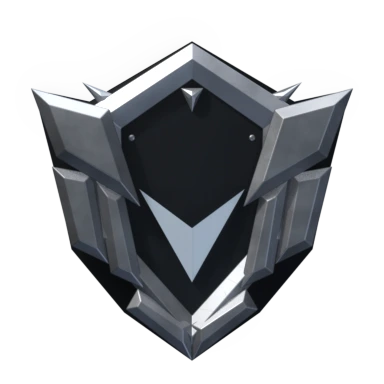
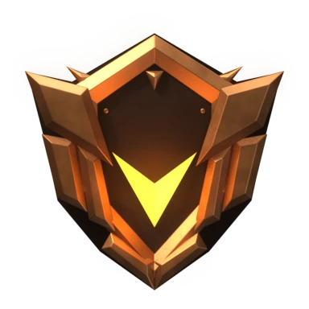
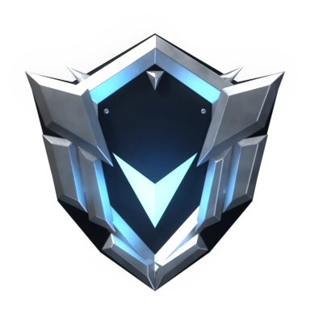


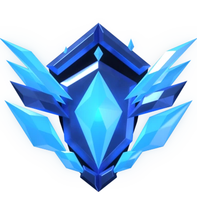
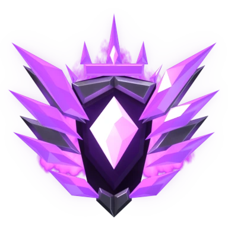

Die ersten fünf Ranked-Matches bewegen deine Wertung besonders stark.
ab 0 Rangpunkten · Drei Stufen: I, II und III.
ab 300 Rangpunkten · Drei Stufen: I, II und III.
ab 600 Rangpunkten · Drei Stufen: I, II und III.
ab 900 Rangpunkten · Drei Stufen: I, II und III.
ab 1200 Rangpunkten · Drei Stufen: I, II und III.
ab 1500 Rangpunkten · Ein einziger Rang ohne Stufen.
ab 2000 Rangpunkten · Der höchste Rang.
Zone 07 · Modi
Übe gegen Bots, spring in offene Räume mit echten Spielern oder geh in die Rangliste. Freunde landen per Einladungslink direkt in deiner Lobby.
Übe allein in drei Stärken, in jedem Modus und auf jeder Karte.
Offene Räume mit echten Spielern. Mit einem Einladungslink sind Freunde sofort in deiner Lobby.
1 gegen 1 bis 3 gegen 3. Siege bringen dich im Rang nach oben.
Sechs Modi
Vier Karten
Die Standardkarte mit Zug und Autos.
Eine Neon-Grossstadt mit Wolkenkratzern, Dächern und Solarfeldern.
Die grosse offene Welt mit Stadt, Wald, Küste und Fort.
Kompakte Arena für Duelle: kurze Wege, klare Linien.
Zone 08 · Hinter dem Spiel
NEON FRONTIER ist ein unabhängiges Projekt von Aurelio Zingarello, gebaut für den Browser, ohne Download.
Ein Shooter, der ohne Installation im Browser läuft und sich trotzdem wie ein richtiges Spiel anfühlt.
Three.js im Browser und ein Node.js-Server mit WebSockets. Der Server prüft Treffer, Bewegung und Schaden.
Neon Junction entsteht aus Modellen von Sketchfab, optimiert mit einer Blender-Pipeline. Dazu kommen der Zug und der Verkehr.
Ein einheitlicher NEON-Toon-Grundkörper, darauf 17 Skins, 15 Rückenstücke und Waffen-Designs.
Die Rang-Embleme sind in Blender gebaut und mit wandernden Lichtreflexen animiert.
Konten, Freunde, Einladungen, Seasons und Erfolge kommen dazu. Kosmetik gibt es gegen FLUX, Vorteile im Kampf nicht.
Heute läuft NEON FRONTIER kostenlos auf neonfrontier.ch.
Alle Tracks stammen von sxiin.
Künstlerinnen und Künstler auf Sketchfab. Wer was gemacht hat, steht in den Credits.
Alle Credits ansehen →Kostenlos. Im Browser. Ohne Download.